Sprechanlässe: Piraten – Sprechanlässe – Klasse 1–4
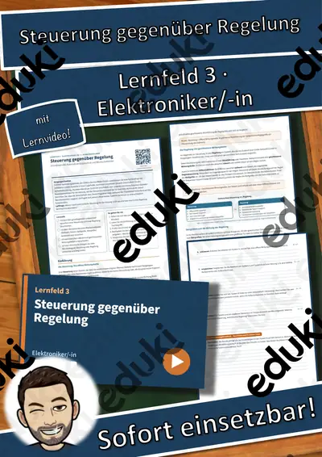
Lernfeld 3 Elektroniker/-in: Steuerung gegenüber Regelung – Einführung, Übungen, Lösungen + Lernvideo

Domino: Bauernhof – Bild-Wort-Spiele – Klasse 1–4

Ich habe, wer hat? Im Restaurant – Lese-Schleifen – Klasse 1–4

Ich habe, wer hat? Kochen und Backen – Lese-Schleifen – Klasse 1–4
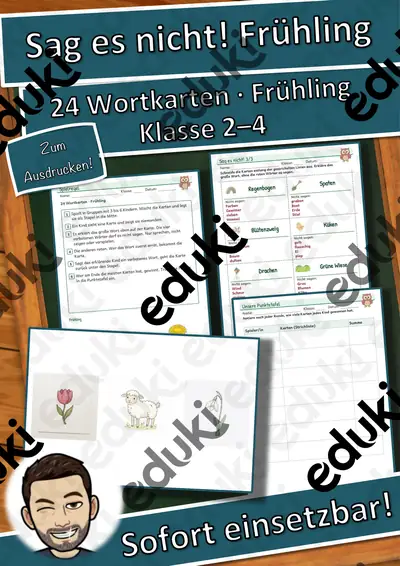
Wortspiele: Sag es nicht! Frühling – Klasse 2–4
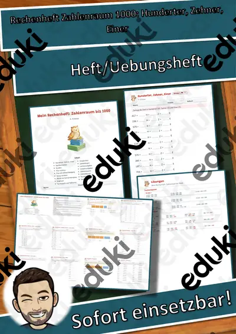
Rechenheft Zahlenraum 1000: Hunderter, Zehner, Einer

LF 11 Kaufleute im Einzelhandel: Deckungsbeitrag und Mischkalkulation – Übungen, Lösungen + Lernvideo

Domino-Werkstatt: Domino Einmaleins mit Darstellungen – kostenlos, Klasse 2–4

Wortgitter-Suchsel: Im Garten – Wortgitter – Klasse 1–4

Klammerkarten: Piraten – Klammerkarten – Klasse 1–4
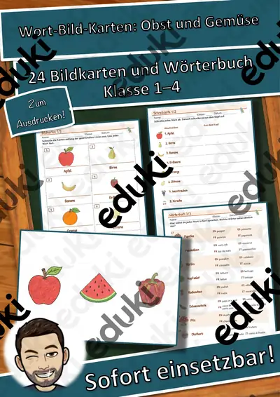
Wort-Bild-Karten: Obst und Gemüse – Wort-Bild-Karten – Klasse 1–4

Lesen, Malen und Kleben: Märchen – Lesen und Malen – Klasse 1–4

LF 7 Kaufleute im Einzelhandel: Lagersteuerung: Bestände und Umschlag berechnen – Übungen, Lösungen + Lernvideo

Wortspiele: Sag es nicht! Hobbys – Klasse 2–4

LF 2 Kaufleute im Einzelhandel: Umgang mit Kundeneinwänden und Alternativen – Übungen, Lösungen + Lernvideo

Rechenheft Zahlenraum 100: Üben, Spielen, Kontrollieren
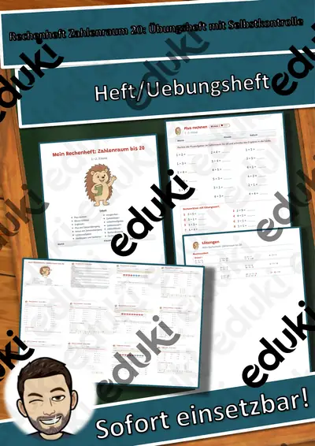
Rechenheft Zahlenraum 20: Übungsheft mit Selbstkontrolle
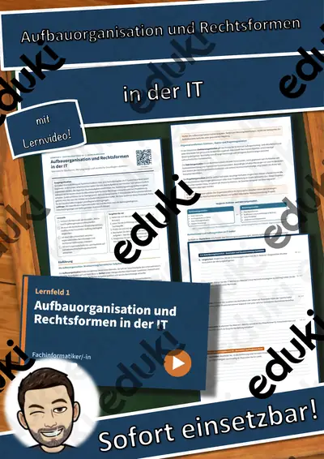
LF 1 Fachinformatiker/-in: Aufbauorganisation und Rechtsformen in der IT – Übungen, Lösungen + Lernvideo

Domino-Werkstatt: Zahlen-Domino bis 100 – kostenlos, Klasse 1–2

Wortgitter-Suchsel: Haustiere – Wortgitter – Klasse 1–4

Himmel und Hölle: Am Meer – Himmel und Hölle – Klasse 1–4

LF 2 Zahnmedizinische Fachangestellte: Anamnese und Befundaufnahme – Übungen, Lösungen + Lernvideo

Wort-Bild-Karten: Berufe – Wort-Bild-Karten – Klasse 1–4

Lesen, Malen und Kleben: Zirkus – Lesen und Malen – Klasse 1–4

LF 8 Verkäufer/-in: Buchung von Geschäftsfällen im Einzelhandel – Übungen, Lösungen + Lernvideo

Sprechanlässe: Körper und Sinne – Sprechanlässe – Klasse 1–4

Memory: Zirkus – Bild-Wort-Spiele – Klasse 1–4

LF 7 Kaufleute für Büromanagement: Aktives Zuhören und Fragetechnik im Kundengespräch – Übungen, Lösungen + Lernvideo

Domino: Zirkus – Bild-Wort-Spiele – Klasse 1–4
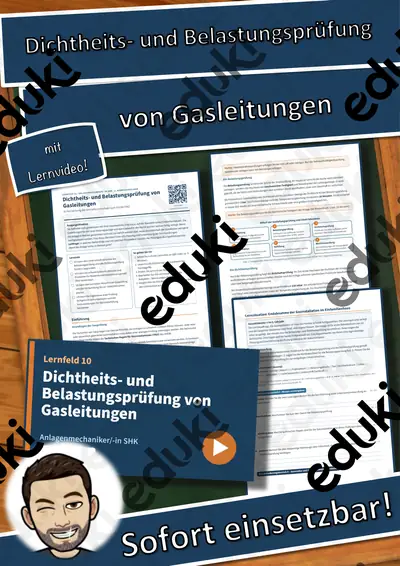
LF 10 Anlagenmechaniker/-in SHK: Dichtheits- und Belastungsprüfung von Gasleitungen – Übungen, Lösungen + Lernvideo

Sicher Lesen Materialpaket: 3 Einheiten – Sicherheitsthemen einfach lesen und verstehen (Grundschule, Klasse 1–2)
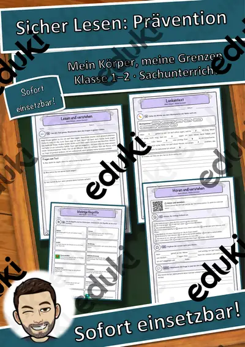
Sicher Lesen Mein Körper, meine Grenzen – Sicherheitsthemen einfach lesen und verstehen (Grundschule, Klasse 1–2)
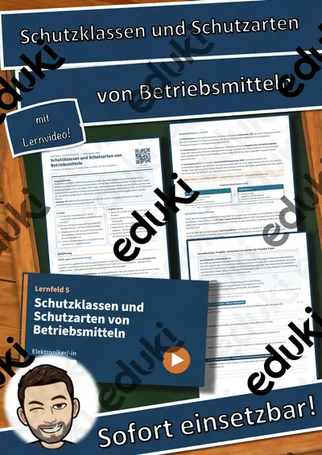
LF 5 Elektroniker/-in: Schutzklassen und Schutzarten von Betriebsmitteln – Übungen, Lösungen + Lernvideo
Sicher Lesen Feuer und Notruf – So handle ich richtig – Sicherheitsthemen einfach lesen und verstehen (Grundschule, Klas
Sicher Lesen Sicher auf dem Weg – Verkehrsregeln und Verkehrszeichen verstehen – Sicherheitsthemen einfach lesen und ver
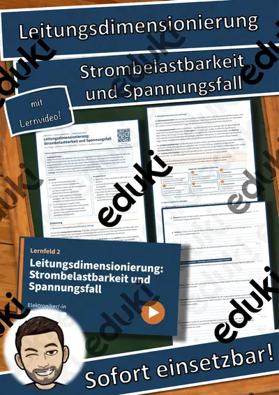
LF 2 Elektroniker/-in: Leitungsdimensionierung: Strombelastbarkeit und Spannungsfall – Übungen, Lösungen + Lernvideo

Klammerkarten: Am Meer – Klammerkarten – Klasse 1–4

Fächer-Steckbriefe A–Z Klasse 1–10: Baukasten für Lehrkräfte – kostenlos

Übertritt nach Klasse 4: Baukasten für Lehrkräfte – kostenlos
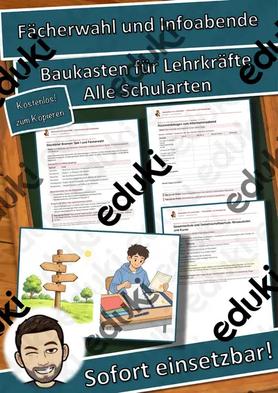
Fächerwahl und Infoabende an allen Schularten: Baukasten für Lehrkräfte – kostenlos

Winter Escape Room, English Year 6 (KS2): 6 Stations, 2 Locks, 1 Magic Word (FREE)

Escape-Room Winter – Deutsch Klasse 5 für die Mittelschule: 6 Stationen, 2 Schlösser, 1 Zauberwort (GRATIS)

Lernentwicklungsgespräche Klasse 1–10: Baukasten für Lehrkräfte – kostenlos
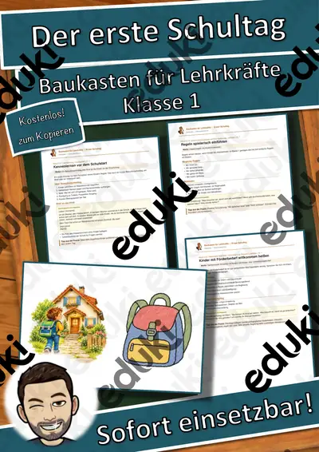
Der erste Schultag in Klasse 1: Baukasten für Lehrkräfte – kostenlos
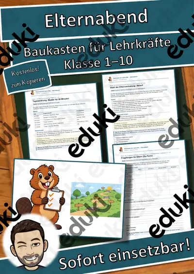
Elternabend Klasse 1–10: Baukasten für Lehrkräfte – kostenlos
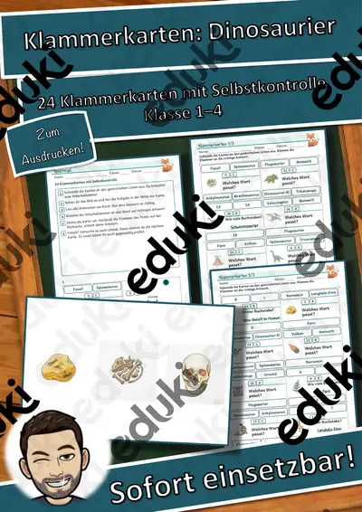
Klammerkarten: Dinosaurier – Klammerkarten – Klasse 1–4
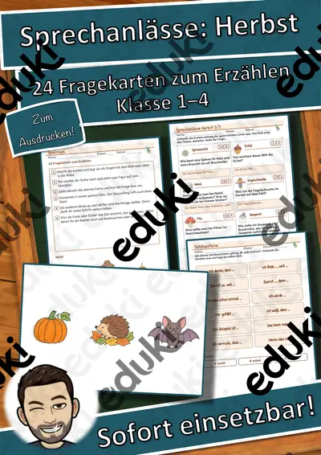
Sprechanlaesse_Herbst_Fragekarten
Keine Materialien gefunden – versuch einen anderen Suchbegriff oder Filter.